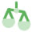
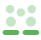

Our Vision
Mission
To achieve these goals, Dat Ecosystem supports you by connecting you with us with its extensive resourcess, taking your Hypercore project to the next level

To advocate for users' rights and a decentralized democratic society

To promote science, civic tech, organizing, education and arts from a decentralized perspective

To conduct research, community activities, seminars and conferences

To strengthen the adoption and understanding of Hypercore protocol and decentralized Projects worldwide
To foster exchange, mutual support and global cooperation among Dat Ecosystem Projects